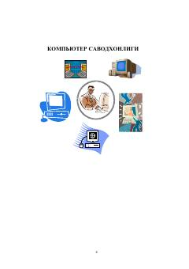

KSKompyuter bilan ishlash va texnika xavfsizligi qoidalari bo'yicha boshlang'ich qo'llanma.
Ushbu qo'llanma kompyuter savodxonligi asoslari, jumladan, texnika xavfsizligi qoidalari, sanitariya-gigiyena talablari va kompyuter qurilmalari bilan ishlash prinsiplarini o'rgatadi. Unda elektr toki, yong'in xavfsizligi va zararli nurlanishlardan himoyalanish choralari batafsil bayon etilgan.